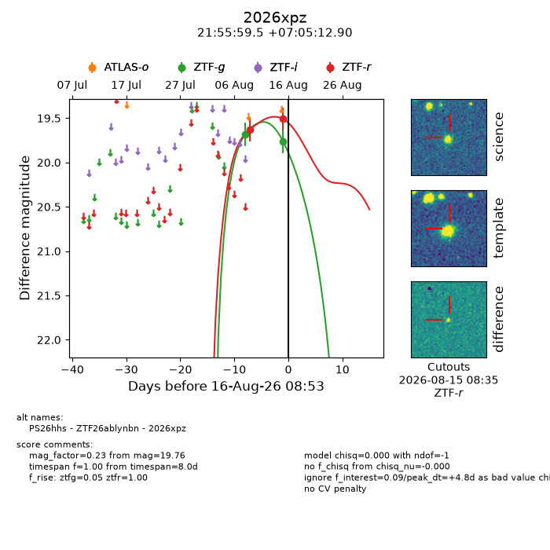
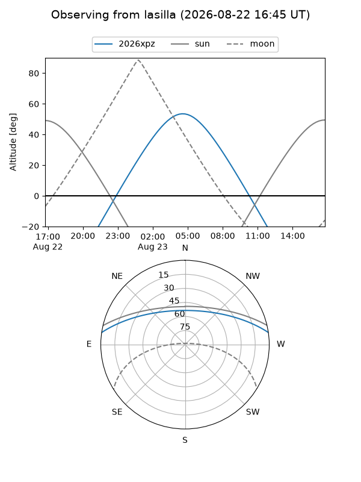
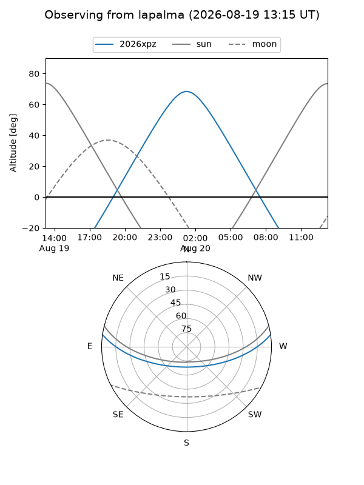
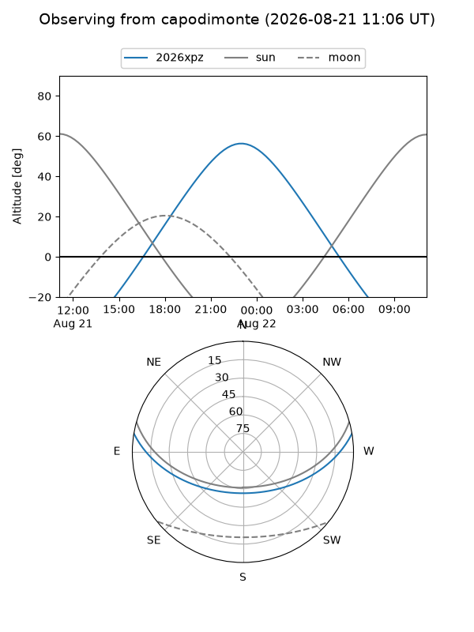
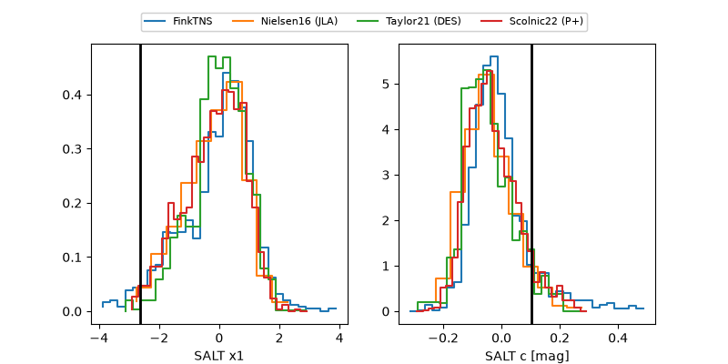

2026xpz
Target 2026xpz at 2026-08-16 08:56
Aliases and brokers:
FINK-ZTF: ztf.fink-portal.org/ZTF26ablynbn
Lasair-ZTF: lasair-ztf.lsst.ac.uk/objects/ZTF26ablynbn
ALeRCE-ZTF: alerce.online/object/ZTF26ablynbn
YSE-PZ: ziggy.ucolick.org/yse/transient_detail/2026xpz
TNS name: wis-tns.org/object/2026xpz
Direct TNS query: direct search
alt names
ZTF26ablynbn (ztf,fink_ztf)
2026xpz (tns,yse)
PS26hhs (panstarrs)
Coordinates:
equatorial (ra, dec) = 328.9977,+7.08692
equatorial (HMS+DMS) = 21:55:59.45,+07:05:12.90
galactic (l, b) = (65.3129,-35.48812)
Flags:
TNS type: nan
peak dt: +4.8
Photometry:
last ztfg=19.76, ztfr=19.51
2 ztfg, 2 ztfr detections
Lightcurve

Visibility



Additional plots
